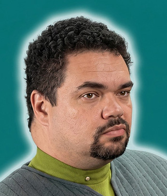

FOTOSono tante, troppe ore che sono di turno in Plancia e non vedo l'ora di ricevere il cambio da Rael. Da quando abbiamo imbarcato nuovamente il nostro caro Ferengi, la vita del personale della sicurezza dell'Afrodite si � fatta sempre pi� caotica e snervante. I primi cenni di stanchezza e nervosismo si fanno sentire: tre ore fa ho dovuto inviare una squadra a sottrarre il Ferengi dalle grinfie di Cip (il mite Cip!) che stava azzannando all'orecchio sinistro il prigioniero il quale, per tutta risposta, stava tentando di azzannare alle caviglie la nostra guardia. Non bastasse, Rael � talmente contrariata di riavere il suo prigioniero ancora qui, tra i piedi, che ha iniziato a dare "fogli di punizione" a chiunque se ne avvicini a meno di due metri. (se ne � beccato uno pure Geppo, ma � meglio non riferire a Rael che fine ha fatto il foglio!). Ed io? Io, dopo l'incidente ai nostri "Promessi Sposi", mi sono ritrovato in Plancia. Per fortuna che tra poco (sempre che Rael si ricordi di me, qui relegato) potr� avere un meritato riposo... sempre che la Maxwell non ricominci con la solita storia: "Assassini goderecci... volevate uccidermi, vero?" urla da almeno due ore all'indirizzo dei due novelli sposi che, per la foga di festeggiare la celebrazione del loro matrimonio, non hanno esitato ad esibirsi in uno show di raro equilibrismo kamashutrico in piena manovra di lancio della navetta portandola a colpire in pieno la fiancata dell'Afrodite che li stava portando nel loro nido d'amore insieme con la Maxwell ed il prigioniero Ferengi. Pare che si sia calmata solo durante una comunicazione con il Comando di Flotta! Ed intanto il tempo passa ed io sono ancora in Plancia in attesa di Rael...
L'attivit� attorno a me � fremente: pare che finalmente riusciremo a lasciare l'orbita per portare il nostro prezioso carico (Maxwell - entrambi - pi� cane; molti souvenir dei Sergiss, un prigioniero Ferengi, una navetta distrutta, mezza fiancata accartocciata, due sposini in licenza matrimoniale) verso la Terra. Non so esattamente chi, per� qualcuno deve aver dato inizio all'attivit� ricreativa: probabilmente star� per iniziare il mitico sorteggione del Superenalotto Galattico, oppure qualche altra diavoleria organizzata per distrarre la tensione accumulata durante l'"incidente" della navetta. In Plancia gira voce che il nostro Capitano avrebbe avuto la "nomination" come Capitano ideale nel gioco "Vota il tuo Capitano" con 365 voti a favore (ma se siamo 360 persone! Qui c'� qualcosa di... diabolico!), mentre Frruuu non � stata mai nominata! Mentre sto per sintonizzarmi sulle frequenze del Superenalotto Galattico, Rael mi da il cambio. "Meglio cos�", penso, "potr� sintonizzarmi pi� tardi dopo esser andato a vedere un bell'holofilm con Vanian, pare infatti (su questa nave non c'� mai niente di certo!) che il settore Medico abbia organizzato una fantastica sceneggiatura sulla base di un vecchio filmato del 21� Secolo "Autunno a New York" o qualcosa di simile. Passate le consegne ad un irascibile comandante della Sicurezza, mi dirigo verso l'Infermeria cercando abbondantemente di evitare la zona di detenzione: se non erro dovrebbe essere di turno Adam Smith... meglio starne alla larga, anche perch� il nostro eroe � tornato segnato nell'animo dalla missione Sergiss... che non sia l'inizio di una svolta epocale nella sua vita! Appena arrivato nella sala degenze dell'Infermeria, vedo un tecnico (che non riesco a distinguere) che sta giocando con Anubi, ma non c'� traccia di Vanian. Comincio a cercare nel laboratorio biomedico, giro anche nella sala operatoria (da dove la mitica Ernestina mi caccia a malo modo... aveva appena dato la cera! Cera? In sala operatoria?) ma di Vanian ancora nessuna traccia. Alla fine la trovo: stava giocando con un terminale del Computer ad un gioco strano chiamato Flipper... mai visto prima. Per�, bello... vediamo... se schiaccio qui si alza questo; se schiaccio qua, invece quest'altro e poi la palla... bello! Oh! Carino! Cinque minuti dopo, Vanian mi trascina di peso (non pensavo che una donna El-Aauriana potesse avere tutta questa forza!) fuori dalla sala e soprattutto lontano dal cumputer. Dopo quasi tre giorni ininterrotti di turno in Plancia finalmente sei ore libere! Passiamo due ore del nostro tempo vivendo l'holofilm sul ponte quindici e ci divertiamo talmente tanto che non ci accorgiamo della serie di allarmi che si susseguono nella nave. Alla fine della nostra avventura, ci vengono riferite due notizie a dir poco sconvolgenti: - Qualcuno ha fatto scattare ripetutamente gli allarmi dalla console di Rael senza che il nostro responsabile della sicurezza potesse accorgesene (non vi dico Rael... sputa ancora veleno contro quell'anonimo mangiatore di merende!) - dopo aver lasciato l'orbita e dopo esserci allontanati dal sistema Sergiss, siamo stati attaccati dai Borg! Grazie alla perizia tecnica dei nostri Ingegneri e alla precisione di Rael, abbiamo ricacciato i nostri assalitori. Non oso dire niente. Era l'occasione della nostra vita: i BORG. Noi, l'equipaggio pi� scalcagnato della flotta, ha un incontro ravvicinato con i Borg ed io... mi guardo una mielosa storia holografica! Quante volte l'ho sognato?! Dieci, mille? Non lo so. So solo che non mi sono accorto di niente! E per giunta, il pop-corn mangiato durante la proiezione del film comincia a farmi male. Preso un calmante gastrico, decido di presentarmi in Plancia da Rael per avere una relazione sull'accaduto dalla viva voce del nostro Capo, ma lungo il tragitto sento urla e grida di gioia provenienti da una sala: entro di corso e in un angolo vedo una quindicina di persone che stanno ascoltando le estrazioni dei numeri del Superenalotto Galattico. Mi fermo anch'io, altro che Plancia. Rael sarebbe capace di pretendere il cambio con tre ore di anticipo! No, mi fermo qui, anche perch� se riesco a collegarmi da quella consolle alla banca dati dell'Infermeria, forse riesco a trovare quel gioco strano... come si chiamava? Flipper? Proviamo! Dopo due ore di gioco appassionato appare un messaggio strano sullo schermo del terminale: "Troppe applicazioni aperte verso questa unit�. Salvare tutti i dati e chiudere tutte le funzioni". Con un abile mossa telematica, chiudo tutte le applicazioni senza lasciare traccia della mia presenza nella rete informatica dell'Infermeria. I miei colleghi sono ancora in attesa dei risultati del Superenalotto Galattico: dunque, vediamo. QUATTRO: ce l'ho! QUARANTATRE: ce l'ho! SESSANTATRE: e vai! SETTANTA: ci siamo! E siamo a quattro! Mi mancano solo il SETTANTATRE, e il NOVANTA. Per l'emozione mi gira la testa! SETTANTAQUATTRO! OTTANTANOVE! NUMERO JOLLY: QUINDICI! Niente da fare! Non ho vinto quasi niente! Ci viene si e no un paio di hamburger al McDonald della Base Stellare 001! Questo pensiero mi fa tornare alla mente i miei doveri. Ormai siamo in fase di attracco, il pianeta SOL 3 � stato gi� stato avvistato da diverso tempo dai nostri sensori. Mentre avvio tutte le procedure di sicurezza per l'attracco, noto che la Base Stellare ci indica un'orbita di parcheggio nei pressi di una notissima nave di classe Galaxy, la USS ENTERPRISE (NCC 1701-D); ma sono troppo occupato, ora... devo organizzare gli uomini della sicurezza per lo sbarco del Ferengi. Dunque... Ciccocci c'� (con il suo solito sguardo triste); Adam, � qui (che stranamente ha un'aria da sognatore); Cip e Ciop sono col Ferengi... s�, pare che qui tutto funzioni. Bene possiamo attraccare. "Ragazzi. Pronti allo sbarco. Consegniamo il nostro prigioniero e poi franchigia. Siamo tornati a casa!"
Diario personale. Sono in una stanza dell'Hotel Astoria, ad Alba�ena (in Portogallo) a passare le ultime ore della mia franchigia sulla Terra. La Terra... quella immensa palla azzurra scagliata nel cielo nero della profondit� dello spazio. Questo pianeta che rappresenta per noi umani qualcosa di pi� di un semplice pianeta. � la nostra casa, � la culla della nostra civilt�, � nostra madre, nostro padre. Nessuno pu� amare questo pianeta come noi umani. Vedere la nostra Terra dallo spazio � uno spettacolo affascinante. Ed anche questa volta, mi ha rapito. Davanti al terminale che riprendeva la sua immagine mi sono quasi estasiato e con me anche i ragazzi della sicurezza. Pure il Ferengi si � fermato a guardarla sospirando: "Un pianeta cos� me lo comprerei. Sai i soldi che farei rivendendomi i diritti di immagine?" Noi ovviamente non gli abbiamo dato retta. Troppo estasiati. Una volta terminate le operazioni di sbarco, siamo scesi sul pianeta azzurro. Lasciato il Ferengi all'Ufficio della Sicurezza della Base ho lasciato liberi i ragazzi per il meritato riposo prima della nostra prossima missione. Ciccocci ha cercato di rintracciare Frruuu, la quale si � dileguata senza lasciare traccia. Cip e Ciop si sono portati verso San Francisco per passare almeno una settimana verso i grandi Parchi Naturali in campeggio. Adam Smith? Beh, il nostro prode � stato visto allontanarsi con la moglie sottobraccio. Pare che Eva abbia detto a Vanian che inizier� una seconda "luna di miele" per lei ed Adam. Ha detto che andr� con Adam in crociera su una nave chiamata "PACIFIC PRINCESS". Peccato che nella relazione inviata alla Kallegalenos c'era anche un messaggio di Adam che le dava le istruzioni per raggiungerlo sulla stessa nave! E - pare - che anche Arianna Field si sia diretta verso Acapulco per una crociera. Rael dovrebbe essere ad un corso di sopravvivenza sulla Luna. Si dice che abbia sfidato due amici Klingon e che in palio ci sia un fantomatico trofeo di guerra. Vanian .. Vanian � qui con me, ovviamente! Stiamo vivendo delle giornate importanti, bellissime. Con noi c'� anche Miscia, coincidentemente in franchigia anche lei con il fidanzato. Per ora chiudo qui. Buone vacanze e... alla prossima!
GM Christian D'Accardi
XTO
USS Afrodite NCC-1863